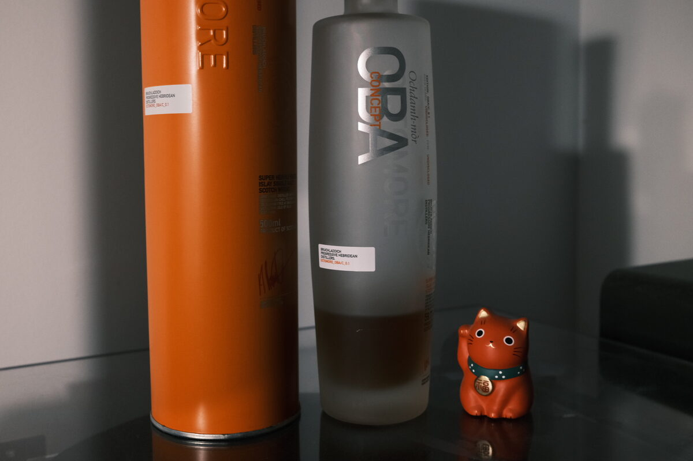

Octomore "OBA" (Bruichladdich) 59.7% (undisclosed)
First of the Octomore Concept releases: Octomore OBA Concept 0.1. Bruichladdich will not disclose anything about this except the ABV. Basically: Octomore Black Art.
Colour Dark gold, ruby.
Nose Waves and waves of perfumed smoke. A blast of acidity and flavour from oranges and lemons. Fruit mince tarts – especially boozy. Jam, scones and cream. Shortbread and digestives. Malt! Some deep oak and dark chocolate. With time, rich cakes – can’t decide between blueberry cheesecake and orange almond cake. It’s like a pâtisserie set aflame. Rich dried fruits: dates and raisins. With some water – oh my – herbal and floral flavours arise. Lavender-scented biscuits and buttery flowers. Marmalade.
Palate So oily, creamy: very thick. Sharp acidity, with strong character: oranges, lemons and limes. Dried fruits and a splash of wine. Lovely sweetness rounding out the acidity: elegant, like Sauternes. Honey sweetness too. Herbal oak replete with cinnamon, cloves, and other assorted baking spices. With some water, richer chocolate notes, and the peat shines through. Elegant peat: earthy, woody, smoky.
Finish Elegant, biscuity peat and billowing smoke. Ash and soot. Those dried fruits, scones, and cheesecakes have been burning for a while now. Rum and raisin ice cream. Incredibly long and filled with smoke. With some water, lemon candy and woody peat. A rich chai latte. Herbal notes, like a strong herbal tea.
Comments A pâtisserie and a fruit stand alight. Heady and aromatic. Supreme Octomore spirit meets supreme Laddie cask wizardry. 92/100.

Posted by Dominic on 08 May 2021